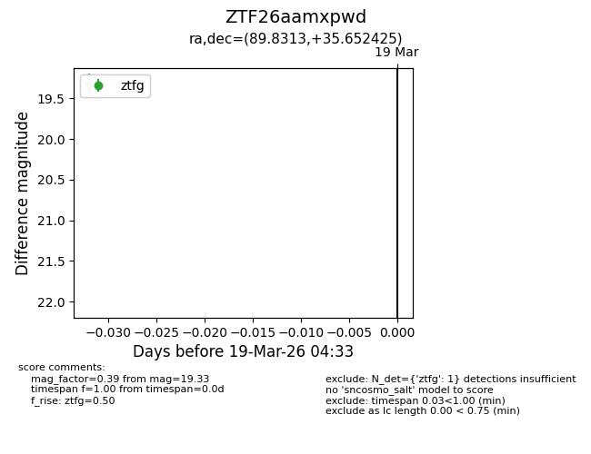
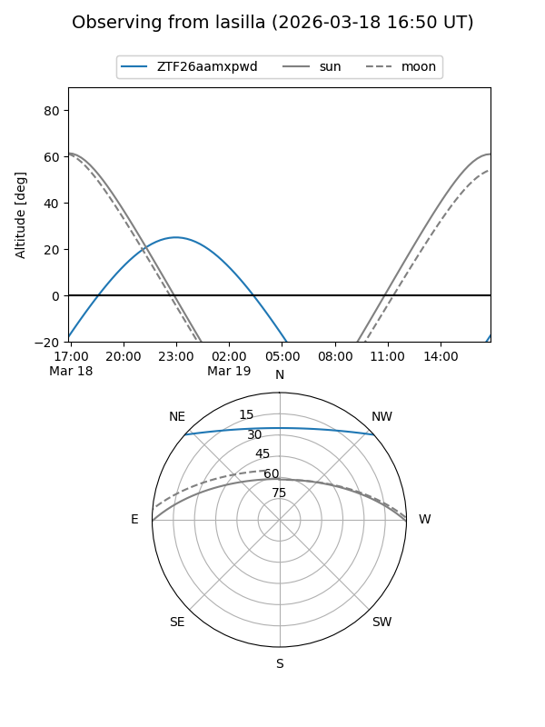
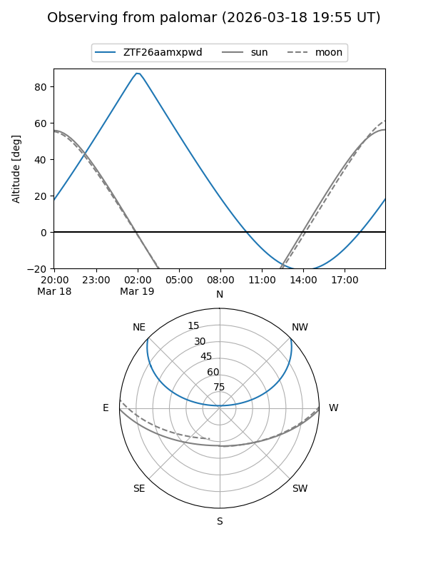

ZTF26aamxpwd
Target ZTF26aamxpwd at 2026-03-19 04:35
Aliases and brokers:
FINK: link
Lasair: link
ALeRCE: link
alt names
ZTF26aamxpwd (ztf,fink_ztf)
Coordinates:
equatorial (ra, dec) = 89.8313,+35.65243
equatorial (HMS+DMS) = 05:59:19.51,+35:39:08.73
galactic (l, b) = (175.6689,+5.89767)
Flags:
Photometry:
last ztfg=19.33
1 ztfg detections
Lightcurve

Visibility


Additional plots